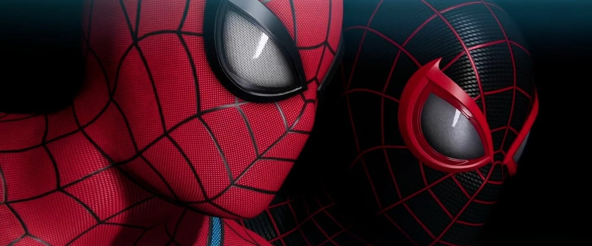

Señal indica que Marvel’s Spider-Man 2 estará listo para 2023 y adelanta cuándo llegará
El juego de Insomniac Games es de los más esperados para PlayStation 5
Marvel’s Spider-Man 2 está en camino, eso es un hecho, pero como hemos visto muy poco sobre él hay quienes dudan que en verdad llegará en 2023. Para todos ellos, Sony lanzó una importante señal de que tienen mucha confianza en que el juego de Insomniac Games debutará en algún momento de este año.
Lo que pasa es que usuarios de redes sociales reportan que Sony ya comenzó la campaña publicitaria de Marvel’s Spider-Man 2. Esto con un video que se comenzó a emitir en canales de televisión de Australia que presenta a Peter Parker y Miles Morales preparándose para luchar contra criminales.
El hecho de que Sony haya iniciado los motores de la campaña publicitaria de Marvel’s Spider-Man 2 es una buena señal de que llegará este año. Lo decimos ya que demuestra confianza en que el juego estará listo para debutar antes de que termine el año.
Comercial de Marvel’s Spider-Man 2 le pone la ventana de lanzamiento
Algo que los usuarios notaron es que el comercial de Marvel’s Spider-Man 2 también le pone ventana de lanzamiento al juego para PlayStation 5. Dicho esto, hay un detalle que puede confundir a muchos.
Lo que pasa es que el comercial indica en letras pequeñas que Marvel’s Spider-Man 2 debutará en primavera, pero ojo, eso no quiere decir que estamos a pocos meses de su estreno ni es una mentira. Recordemos que el comercial está destinado para Australia y su primavera es del 1 de septiembre al 1 de diciembre al estar en el hemisferio sur.
¿Qué quiere decir lo anterior? Que Marvel’s Spider-Man 2 llegará en nuestro otoño de 2023. Esto está lejos de ser una sorpresa, puesto que a finales del año pasado Insomniac Games y PlayStation ya habían apuntado su estreno por esas fechas.
¿Qué te pareció esta noticia? ¿Estás emocionado por jugar Marvel’s Spider-Man 2 antes de que termine el año?